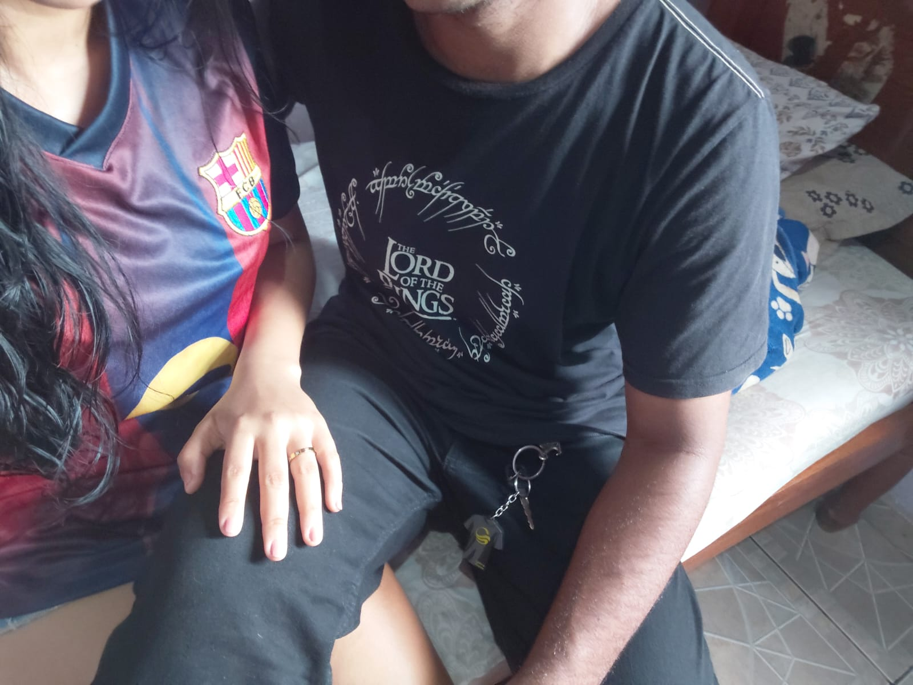

Diante da situação de hj, quero pedir desculpas a vc por agir como uma criança, diante disso eu tenho que mudar e melhorar, acabo ficando todo abalado em relação a essas coisas e tals. Mas eu peço desculpas, mas é pq todos os finais de semanas que gente marca pra gente se ver são muitos importantes e especiais pra mim, como vc viu eu planejei tudinho e coloquei em uma listinha, e não realizar isso com vc, me dói, me dói muito amor, por isso eu sentir todo esse abalo amor. Mas o que eu quero falar é que a gente nunca deve desistir e nem cancelar nossos planos, a gente deve sempre se esforçar e se dedicar pra fazer as coisas darem certo até no último minuto, temos até amanhã pela noite pra se esforçar e tentar pra ver se as coisas darão certo, vamos fazer nosso máximo e nosso melhor para fazer acontecer as coisas, vamos conversar e dialogar pra tentar resolver as coisas, pra ver se vai dar tudo certo pra gente se ver, tenho certeza que se a gente se esforçar, se dedicar, nossos esforços serão recompensados. O importante é a gente crer e ter fé em Deus, vamos rezar e orar a Deus para que as coisas deem certo, vamos pedir intercessão do Sagrado Coração de Jesus, vamos pedir forças a Nossa Senhora, para assim as coisas darem certo meu amor.